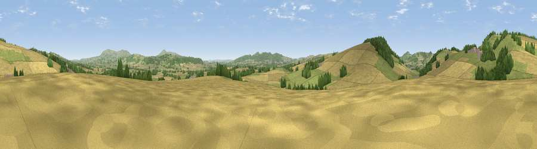

Viewpoint near Culmington
#22015 in England · top 62% of its area beats it · near CulmingtonThe view, rendered

A 360° render of this exact spot computed from the terrain model, tree cover and land cover — summer colours, afternoon light, calibrated against photographs of famous viewpoints. Real trees, hedges and buildings will differ in detail.
The panorama
Grey silhouette: terrain skyline in each direction (720 bearings, Earth curvature and refraction included). Dashed green: skyline with trees (+15 m) and buildings (+8 m) as obstacles. Blue strip: how far the ground is visible on each bearing.
Where the view opens
Wedge length = distance to the farthest visible ground on that bearing (vegetation-aware). Rings at 10, 25 and 50 km.
What fills the view
50% cropland · 36% grassland · 13% woodland ·
Angular shares of the visible panorama (visual magnitude), not map area. Landscape diversity 0.45 (0–1 Shannon).
Key numbers
More beautiful places nearby
The staircase of upgrades: each row has a higher view potential than everything closer. Driving times are estimates from straight-line distance, calibrated against real road routing — check an actual route before setting out.
| Place | Direction | Drive | Score |
|---|---|---|---|
| Viewpoint near Halford | NNW · 2 km | ~5 min | 74.0 |
| Viewpoint near Halford | NNW · 2 km | ~6 min | 76.2 |
| Burrow | W · 8 km | ~17 min | 79.4 |
| Bringewood Hill | S · 9 km | ~18 min | 82.2 |
| Viewpoint near Asterton | NW · 10 km | ~19 min | 83.0 |
| Viewpoint near Burwarton | E · 13 km | ~24 min | 83.4 |
| Titterstone Clee | ESE · 13 km | ~25 min | 83.8 |
| The Lawley | N · 15 km | ~27 min | 85.8 |
52.43852, -2.78733 · source: screening · position refined by local search. Computed location — check access rights before visiting.